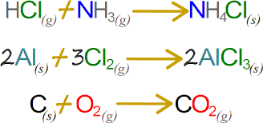
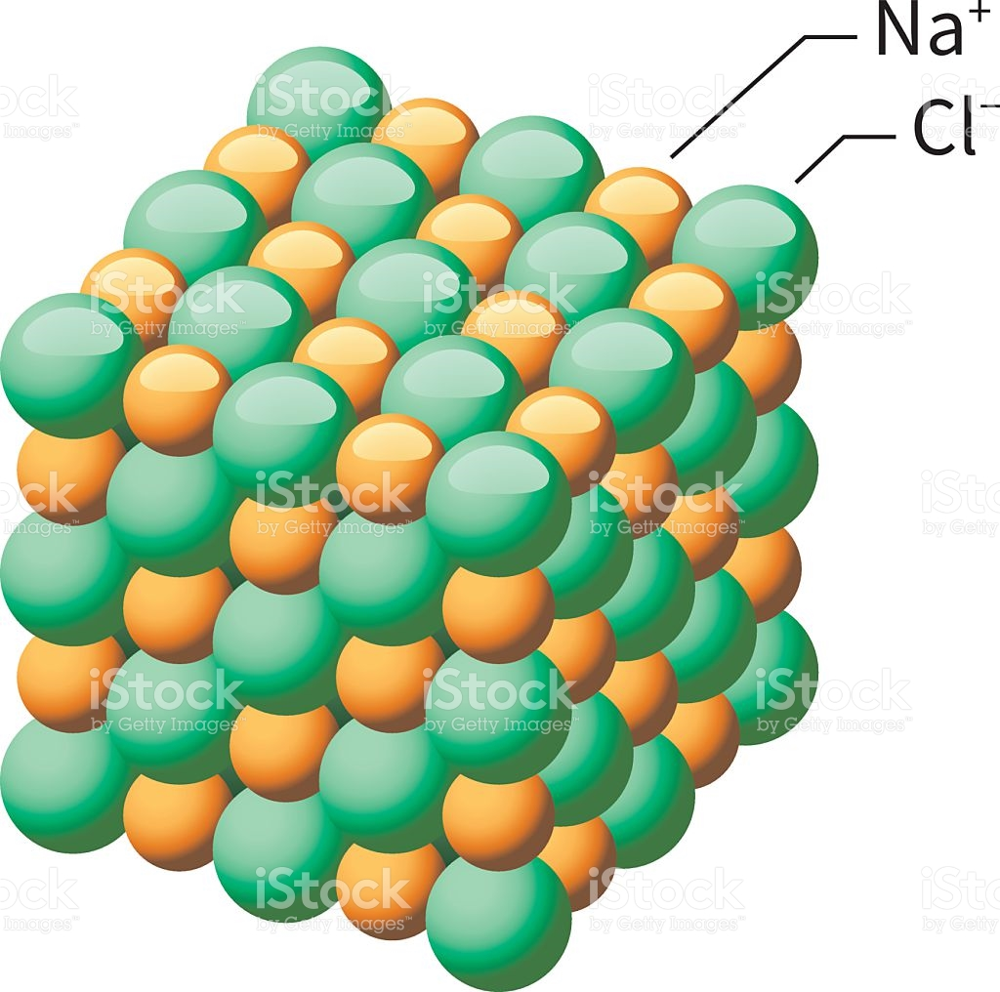
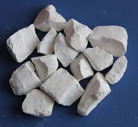

Las Reacciones de Combinación:
Las Reacciones de Combinación o Reacciones de Síntesis son aquellas en las que dos sustancias se unen para formar un único producto. En esta reacción los átomos de los reactivos se reagrupan para dar lugar el producto según la fórmula:

imagen 7 reaccion se sustitucion
Metal + no metal compuesto binario (óxido, sulfuro o haluro)
Para los metales de los grupos IA, IIA y también para el aluminio, zinc y plata, siempre podemos predecir el producto que han de formar. Para otros metales que tienen estado de oxidación variable, el producto final depende de las condiciones de reacción, pero generalmente se necesita más información para predecir el producto. Considere el siguiente

imagen 8 cloruro de sodio
No metal + oxígeno óxido de no metal
En general, hay una variedad de productos que pueden formarse en reacciones de este tipo. Por ejemplo cuando el carbono se combina con el oxígeno, si la cantidad de oxígeno presente es limitada, el producto es monóxido de carbono (CO); si hay un exceso de oxígeno, el producto es dióxido de carbono (CO2), como se puede observar en las siguientes ecuaciones:
imagen 9 dioxido de carbono
Oxido de metal + agua hidróxido de metal
Por ejemplo, el óxido de calcio (CaO) se combina con el agua para formar hidróxido de calcio .
La fórmula del hidróxido formado está determinada por el conocimiento del número de oxidación del metal y la carga del ion hidroxilo (OH-). Si el metal presenta más de un estado de oxidación el estado de oxidación en el hidróxido es siempre igual al que tenía el óxido. Por ejemplo, el óxido de hierro (III) forma el hidróxido de hierro (III). Debido a la formación del hidróxido del metal o base, a partir del óxido de metal en agua, el óxido del metal es algunas veces llamado óxido básico.

imagen 10 oxido de calcio
Oxido de metal + agua oxácido
Los óxidos de no metales reaccionan con agua para formar oxácidos . Por esta razón son frecuentemente llamados óxidos ácidos. Ejemplo, el dióxido de azufre reacciona con agua para formar ácido sulfuroso .
El dióxido de azufre, SO2 puede ser oxidado en el aire para formar SO3. Cuando éste se combina con el agua, se produce ácido sulfúrico.
imagen 11 oxido de azufre
Oxido de metal + óxido de no metal=sal
Estas reacciones se pueden considerar como reacciones de neutralización. Puesto que el óxido del metal es un anhídrido básico y el óxido de un no metal es un anhídrido ácido, la combinación de éstos para formar la sal es realmente un tipo de reacción ácido-base. Una forma de predecir el producto formado en reacciones de este tipo es considerar cuál base o hidróxido el óxido de metal formaría es estuviera en agua y cuál ácido el óxido del no metal formaría si estuviera en agua. Luego decidiendo cuál sal pueden formar el ácido y la base se determina el producto.
imagen 12 sulfato de magnesio
A continuacion podremos observer mas de cerca diferentes ejemplos de la reaccion de sustitucion